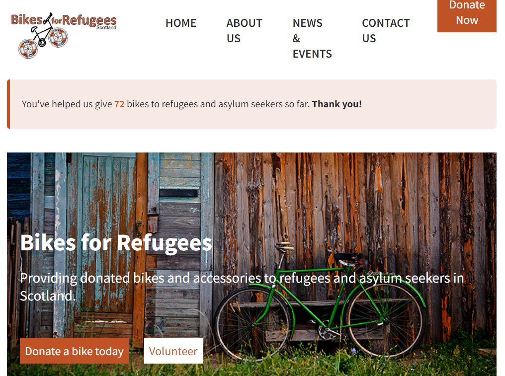
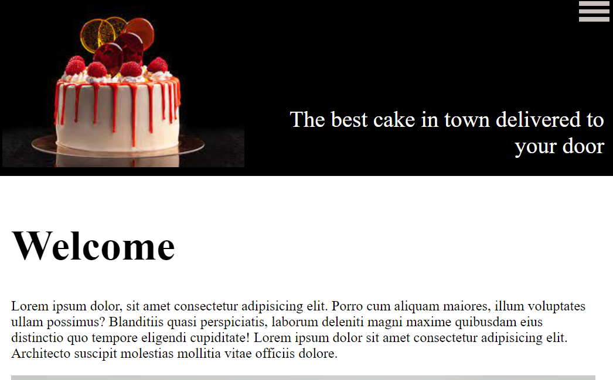
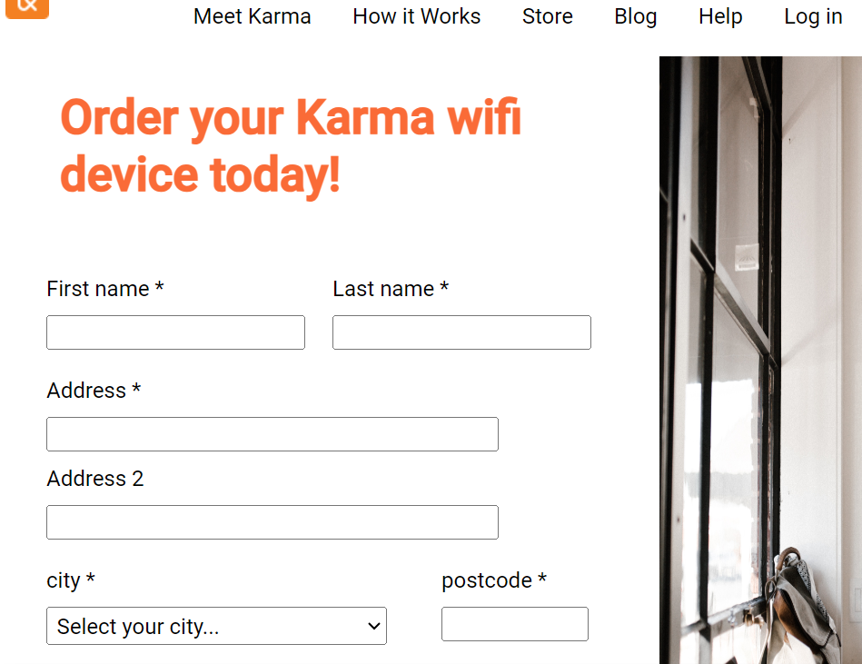
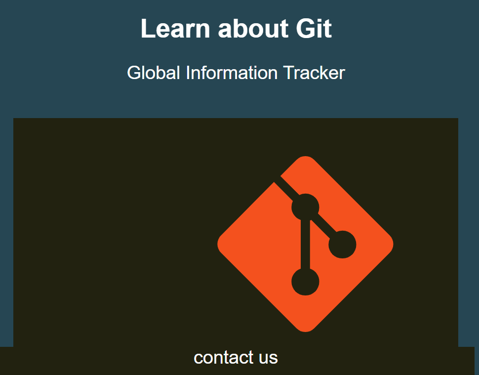
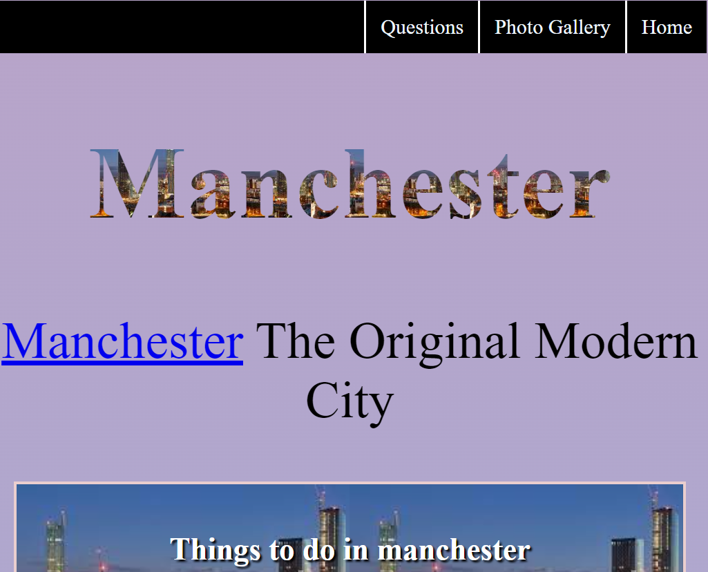
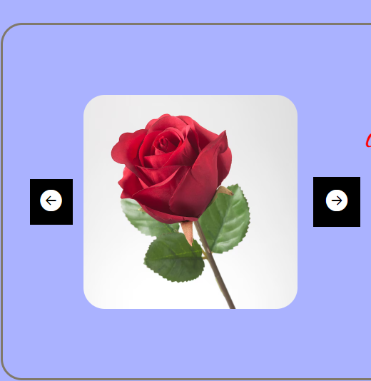

<!DOCTYPE html>
<html lang="en"></html>
<html>
    <head>
        <html lang="en">
            <link href="https://cdn.jsdelivr.net/npm/bootstrap@5.2.3/dist/css/bootstrap.min.css" rel="stylesheet" integrity="sha384-rbsA2VBKQhggwzxH7pPCaAqO46MgnOM80zW1RWuH61DGLwZJEdK2Kadq2F9CUG65" crossorigin="anonymous">
  
        <link rel="stylesheet" href="style.css">
         <meta charset="UTF-8">
   
   
    
    </head>
    <body>
<header>
   
        
       
    <label class="hamburger-menu">
        <input type="checkbox" class="checkbox">
    </label>

    <aside class="sidebar">

        <nav>
          <ul class="sidebarul">
    
         <li><a href="index.html"> HOME</a></li>
         <li><a href="project.html"> project</a></li> 
         <li><a href="resume.html"> Resume</a></li> 
        
         
        </nav>
    </aside>
    <aside class="head">
        <h1><span class="blu"></span><span class="hone">
Sabella Fisseha</span>
            </h1><p class="headspan">
PROJECT MANAGER</p>
</aside>

</header>
<main>
<div class="project-maindiv">
    <h1><span class="blu"></span> Projects</h1>
    
<p>I embarked on a CYF course, enabling me to kickstart my coding journey in a short period.
     In addition to the technical aspects, this course has provided me with valuable soft skills. Over the course
      of web development journey, I have successfully 
    created numerous websites. These are some of the projects I have done so far.</p>

<section class="bike"> <p>Bike for refugees</p>
    <a href="https://deploy-preview-474--cyf-bfr.netlify.app/"> </a></section>
    <section><p>Responsive Cake</p>
    <a href="https://deploy-preview-126--cyf-module-html-css.netlify.app/cakes-co/"></a></section>
<section > <p>Karma</p> <a href="https://deploy-preview-641--cyf-module-project-html-css.netlify.app/"></a></section>
<section><p> Store</p> <a href="https://deploy-preview-641--cyf-module-project-html-css.netlify.app/store"></a></section>
<section> <p>Git Wireframe </p><a href="https://deploy-preview-112--cyf-module-html-css.netlify.app/wireframe"></a></section>
<section><p>Manchester</p><a href="https://sprightly-shortbread-72642a.netlify.app"></a></section>
<section><p> IMG karason </p><a href="https://cyf-personalpage.netlify.app/"></a></section>

</div>
</main>

    </body>
</html>